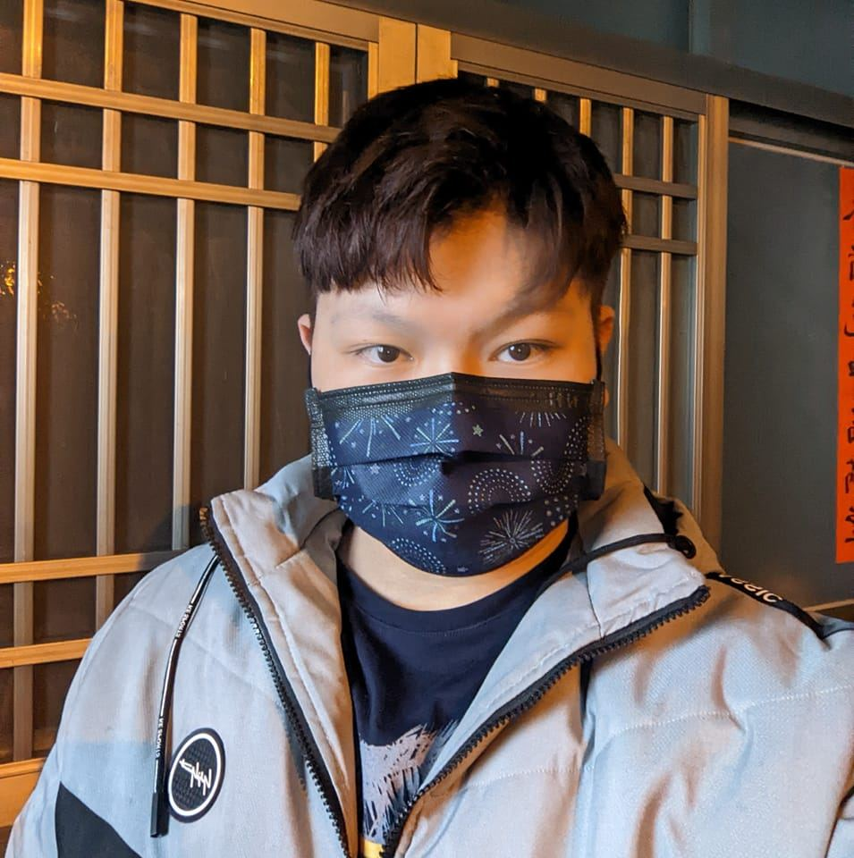
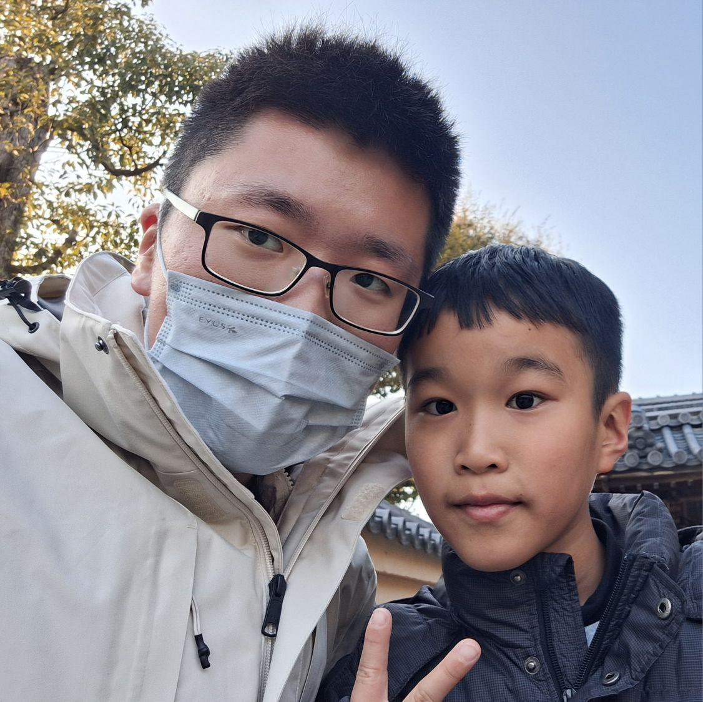

1. 需求評估
📦 產出 → 專案可行性報告、粗估報價單
不只是寫程式。我們專注於跨領域的系統整合，從底層感測器、嵌入式系統到高階深度學習模型與後台介面，為複雜的實體環境打造客製化、高可靠度的自動化解決方案。
探索我們的專案
技術架構： Python 後端、物聯網感測器節點、資料庫串接
客戶挑戰： 傳統養殖場缺乏科學化數據，水質突變或設備異常時無法即時反應，且人工巡視成本極高。

技術架構： 深度學習物件偵測模型、影像串流處理、警報聯動系統
客戶挑戰： 廣闊海岸線的遊客安全管理困難，傳統紅外線或實體圍籬容易受海象干擾，且無法精準辨識「人」。

技術架構： Ubuntu 環境、ROS 2、C++/Python、多音束聲納與慣性導航系統數據解析
客戶挑戰： 在惡劣海象下進行高解析度的水下測繪與環境採樣，需要極高穩定性的載具控制與龐大的感測器資料同步。
具備跨領域整合能力，我們用最適合的工具解決最複雜的問題。
涵蓋範圍： 瑕疵檢測 (AOI) / 智慧安防監控 / 行為預測分析 / 客製化模型訓練與輕量化
優勢： 不依賴現成套件，針對特殊場景（如低光源、水下）微調模型，並具備邊緣運算部署能力。
涵蓋範圍： 傳感器網路建置 / MCU 開發 / DAQ 資料擷取 / 有線與無線通訊模組整合
優勢： 自底向上的開發能力，從單晶片到整機系統測試，確保極端環境的穩定性。
涵蓋範圍： 後台管理系統 / 視覺化儀表板 / ROS 2 機器人作業系統 / 自動化控制腳本
優勢： 處理複雜資料流，將雜亂硬體訊號轉為友善監控介面，提供一站式解決方案。
「我們是一群具備頂尖學術研究背景與豐富實戰經驗的工程師。從深度學習演算法的研究，到面對真實世界物理限制的硬體整合，我們致力於將前沿技術轉化為穩定運行的商業系統。
我們不害怕複雜，我們專注於解決問題。」

國立中興大學 電機系通訊所碩士班
國立澎湖科技大學 電信工程/資工 雙學士
經歷：澎科大海岸觀測暨無人載具實驗室工程師

國立交通大學 資訊工程系研究所
國立宜蘭大學 資訊工程系學士

國立澎湖科技大學 電信工程學士
經歷：現任中華電信 (CHT) 電信工程師

國立中山大學 電機工程學系學士
經歷：現任瑞昱半導體 (Realtek) 射頻工程師
💡 為了提供您最精準的評估
請盡可能詳細描述您的使用場景與目前遭遇的技術瓶頸。我們的工程團隊將在 24 小時內與您聯繫，並安排初步技術會議。